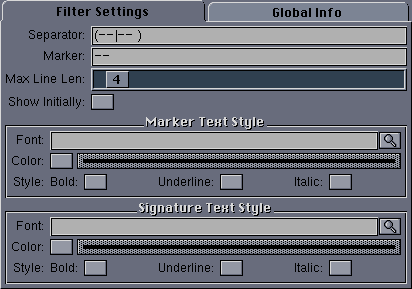

|
User Interface
|
The user interface for this filter looks like this:

The available configuration options are:
- Separator - A pattern matching signature separator lines.
Everything from lines matching this pattern until the end of the article
is taken to be part of the signature block.
- Marker - This text is used as a marker between the rest of
the article body and the signature block. It is inserted by the program
and need not be the same as the Separator.
- Max Line Len - Since regular expression checking can be slow
on some CPU's, only lines with this many characters or less are checked
against the Separator pattern. This can avoid a large number of
expensive pattern matches.
- Show Initially - If selected, the signature block is
displayed initially and can be toggled off. Otherwise it is hidden
initially and can be toggled on.
- Marker Text Style - The text style for the marker line.
- Signature Text Style - The text style for the signature block
text.
Back to Top
|